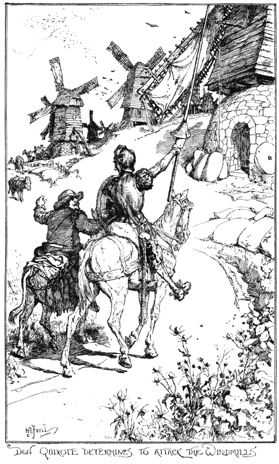

Thinking the unthinkable

Tomas Petricek, Alan Turing Institute
http://tomasp.net | tomas@tomasp.net | @tomaspetricek
Founding of natural sciences
A story about incommensurability

Founding of natural sciences
The Order of Things
Michael Foucault (1966)
- Ulisse Aldrovandi (1522 - 1605)
- Comte de Buffon (1707 - 1788)
Founding of natural sciences
Buffon was [astonished by Aldrovandi's] mixture of exact descriptions, reported quotations, fables, remarks dealing indifferently with an animal’s anatomy, its use in heraldry, its habitat, its mythological values or the uses to which it could be put in medicine or magic.

Incommensurability
Two theories do not share a basis that would
allow evaluating them using a common metric.
Appears in multiple forms
- Foucault's episteme
- Kuhn's paradigms
- Lakatos' research programmes
- Polanyi's personal knowledge
Hidden assumptions in programming
Episteme, paradigms & research programmes
Programming is error-prone. It is even worse when programming a quantum computer (...) because human intuition is much better adapted to the classical world than to the quantum world.
How can we build automatic tools for verifying correctness of quantum programs? A logic for verification of both partial correctness and total correctness of quantum programs was developed (...).
Algol research programme
One of the goals of the Algol research programme was to utilize the resources of logic to increase the confidence that it was possible to have in the correctness of a program.
Science of Operations
Mark Priestley (2012)
Episteme, paradigm or research programme
Change what questions we ask
What does the PL community assume?
What does the PPIG community assume?
Mathematization of computer science
The rise of theoretical computer science was anything but inevitable. (...) Advocates of theoretical computer science pursued a strategy that served them well within the university, but increasingly alienated them from their colleagues in the industry.
The Computer Boys Take Over
Nathan Ensmenger (2012)
Thinking the unthinkable
What else could programming research be?
Foucalt's classical episteme

Museums and encyclopedias
Collections of species as they are
Organized according to taxonomy
Programming and sample species?
Common Law is founded on precedent. (...) Courts [today] will follow the example of other courts which have decided similar cases in the past.
This procedure recognizes the principle (...) that practical wisdom is more truly embodied in action than expressed in rules of action.
Personal Knowledge
Michael Polanyi (1958)
Renaissance episteme
Resemblances between signs
Across all areas of knowledge
Programming with signs?
Resemblances between signs
Animal's anatomy, its habitat and the
uses to which it could be put in magic.
Programming with signs?
Resemblances between signs
Programming tool's theory and the
uses to which it could be put in practice.
Programming with signs?
Stories, metaphors and analogies bridge the
boundaries across different forms of knowledge
If a subject does not permit exactness,
it is not sufficient to be exact about something else.Personal Knowledge, Michael Polanyi (1958)
Summary
Animal's anatomy and its uses in magic
Summary
Programming tool anatomy its uses in magic
Summary
During the 18th century the French Academy of Sciences
stubbornly denied the evidence for the fall of meteorites.
We no longer consider falling of meteorites to be incompatible with the scientific world view. But other doubts, which we now sustain as reasonable have only our beliefs to warrant them.
More information
More philosophy of science
tomasp.net/blog/tag/philosophy
Current PPIG paper draft
tomasp.net/academic/drafts/unthinkable
What I'm also working on :-)
thegamma.net